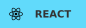

吉林大学通信工程在读 · Agent Harness & AI Infra 探索者
让字节和心跳一起跳动。夜の余白に、夢を。
🌐 Website · ✦ About me · 📓 Blog · 🎧 Music
👋 Somewhere between signals & systems
我是 molamaker，吉林大学通信工程在读。白天在信号、数学和硬件之间探索，夜里把脑电波交给代码，也交给耳机。
我关注 Agentic Harnessing、AI Infra 和数学工具：让模型接入真实工具，让抽象想法变成可操作的界面，也继续追问算力、内存和通信带宽背后的系统边界。
mola@jlu:~$ whoami
student Communication Engineering @ Jilin University
building Agent tools · mathematical interfaces · useful workflows
exploring Harnesses · AI infrastructure · hardware
method Trial → feedback → another iteration🛠️ Skills & Technologies


Still exploring / 持续学习
🧩 Engineering is imagination made tangible
| Project | What I'm making |
|---|---|
| CAD2GIS | DWG → GIS：转换流水线、OSM 匹配、人工审查与 Agent 工具接入。 |
| MathHub | AI × GeoGebra × TikZ：让数学表达、源码和交互画板相遇。 |
| JLUhot | 基于 AIHOT 改造的吉大信息聚合站：通知、学院信源、分类与日报。 |
| AstrBot UI Tree | 元素树、实时预览与 JSON 编辑，让 Agent 的结构化界面可见。 |
| Nanodot | 基于 nanoMuse 的个人 Agent 衍生项目，探索自己的角色与跨设备体验。 |
| molamaker-site | 我的个人工坊：项目、文字、音乐与一些尚未定型的想法。 |
More experiments: offline skills & loops · MathModel · learning notes
🐍 Snake Contributions
A little progress, one square at a time.
🌙 After the terminal
ZUTOMAYO、椎名林檎、EGOIST；长跑、羽毛球；装机、拆电器，以及偶尔的恐怖游戏。
在试错里前进：做出来、看见问题，再把它改好。也可以把耳机分你一半，喵。
Recent contributions ·
All repositories ·
Visit my workshop
A little signal, somewhere in the blue.
蓝色的远方，总有回音。青の彼方で、また。